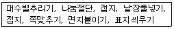
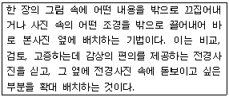

전자출판기능사 (2010-03-28 기출문제)
1과목: 출판론
1. 다음 작업은 출판제작 과정 중 어디에 해당되는가?

- 인쇄
- 제책
- 출력
- 교정
(정답률: 95%)

2. 그라비어 인쇄의 특징에 대한 설명으로 옳지 않은 것은?
- 다른 인쇄 방식에 비해 색채의 표현을 풍부하게 할 수 있다.
- 앤드레스(endless) 제판이 가능하여 건자재, 벽지와 같은 앤드레스 무늬의 인쇄가 가능하다.
- 그라비어는 스크린 그라비어와 델젠 그라비어 2가지 종류가 있다.
- 속건성의 잉크를 사용하므로 고속인쇄가 가능하다.
(정답률: 54%)
3. 색입체(color solid)에 대하여 가장 옳게 설명한 것은?
- 색의 3속성에 기반을 두고 계통적으로 배열한 것이다.
- 3자극치 x, y, z의 합에 대한 비를 좌표로 나타낸 것이다.
- 채도의 변화를 계통적으로 표시하기 위한 색표이다.
- 프리즘을 통과하는 빛의 파장을 색으로 표시하여 나타낸 그래프이다.
(정답률: 67%)
4. 다음 중 국제표준도서번호의 약어로 옳은 것은?
- ISSN
- ISBN
- ISON
- ISAN
(정답률: 86%)
5. 출판기획서를 작성하는 시점에서 해야 할 일로 가장 적절한 것은?
- 발간 예정도서의 제목은 대외비로 처리해야 하므로 기획서에 표시하지 않아야 한다.
- 예상 정가는 책의 페이지에 따라 정해지기 때문에 책의 제작이 완성된 이후 정하는 것이 좋다.
- 출판기획서에는 대상 독자층의 취향, 직업, 연령, 교육정도, 구매 예상기관, 홍보 방안 등도 함께 기술하는 것이 좋다.
- 판매 목표나 판매 전략은 변수가 많이 발생하기 때문에 책의 출간 이후에 검토하는 것이 더 효과적이다.
(정답률: 87%)
6. 스크린 인쇄의 인쇄회로기판 제작에서 UV 백색 잉크로 인쇄를 하며, 인쇄회로를 인식할 수 있도록 하는 것은?
- 마킹 인쇄
- 설계도면 인쇄
- 코팅 인쇄
- 솔더 인쇄
(정답률: 78%)
7. 팝업 북(Pop-up Book)에 대하여 가장 옳게 설명한 것은?
- 책을 펼치면 그림이 나오거나 입체가 완성되도록 제책한 책
- 비닐로 책의 표지를 만들어 제책한 책
- 구멍을 뚫어 바인더에 끼워서 제책한 책
- 책의 표지와 내지에 네모난 구멍을 촘촘히 뚫어 링을 구멍에 넣고 프레스로 눌러 마무리 제책한 책
(정답률: 96%)
8. 양장 제책에서 표지의 여는 쪽 위, 아래에 가죽이나 클로스 등을 세모꼴로 붙여 튼튼하게 하거나 장식의 효과를 주는 것을 무엇이라고 하는가?
- 책귀
- 면지
- 돋음띠
- 귀발(받)이
(정답률: 77%)
9. 출판기획시 출판사가 정가를 책정하는 방법이 아닌 것은?
- 흡수형 정가 책정법
- 프라이스 라인 방법
- 코스트 플러스 방법
- 추정형 정가 책정법
(정답률: 71%)
10. 다음 인쇄판 중 평판에 해당되지 않는 것은?
- 석판
- 전기판
- 금속평판
- 콜로타이프
(정답률: 53%)
11. 책의 본문을 실이나 철사를 이용하여 꿰매는 대신에 접착제만으로 작업하는 방식은?
- 양장
- 호부장
- 무선철
- 중철
(정답률: 77%)
12. 다음 인쇄 기계 중 인쇄 속도가 매우 빠르며 다량의 인쇄를 할 때 주로 사용되는 형식은?
- 평압식 인쇄기
- 원압식 인쇄기
- 윤전식 인쇄기
- 평행 가압식 인쇄기
(정답률: 65%)
13. 출판유통의 주요 기능으로 가장 거리가 먼 것은?
- 상적유통기능
- 물적유통 능
- 정보유통(서비스)기능
- 인적유통기능
(정답률: 82%)
14. 평판 인쇄용 판재의 구비조건에 해당되지 않는 것은?
- 경도가 낮아야 한다.
- 신축이 없어야 한다.
- 두께가 일정해야 한다.
- 감지성이 좋아야 한다.
(정답률: 70%)
15. 빨강과 청록이 인접한 경우 서로의 영향으로 인하여 각각 채도가 더욱 높게 보이는 현상은?
- 색상대비
- 보색대비
- 면적대비
- 명도대비
(정답률: 88%)
16. 출판물 제작시 경비 산출 항목 중 간접원가에 속하는 것은?
- 인쇄비
- 제책비
- 창고 임대료
- 원색 분해비
(정답률: 87%)
17. 책 본문 인쇄물을 접지기계로 3번을 접은 후 제책을 했다. 이 인쇄물 한 장에 해당하는 총 쪽수는?
- 8쪽
- 16쪽
- 32쪽
- 64쪽
(정답률: 80%)
18. 그라비어 제판에서 적색 안료를 혼합한 젤라틴을 흡수성과 유연성이 뛰어난 종이에 도포하여 건조한 후, 중크롬산칼륨 수용액에 침적시켜 감광성을 부여한 것을 무엇이라고 하는가?
- 카본티슈
- 로토필름
- 백선스크린
- 그레이스케일
(정답률: 68%)
19. 다음 중 녹색(green)의 파장 범위에 대하여 가장 옳게 나타낸 것은?
- 380~430mm
- 467~483mm
- 488~493mm
- 498~530mm
(정답률: 65%)
20. 1895년 미국의 월간 문예지인 bookman이 가장 잘 팔리는 여섯 권의 신간서 리스트를 게재한데서부터 생긴 말로, 원래 어떤 기간 중에 발행된 책 중에서 예상 이상으로 잘 팔리는 책에 쓰인 말은?
- 베스트 셀러(best seller)
- 패스트 셀러(fast seller)
- 스테디 셀러(steady seller)
- 핫 셀러(hot seller)
(정답률: 81%)
2과목: 전자 출판
21. 인터넷 전자출판물의 하나인 홈페이지를 제작할 때 고려해야 할 사항으로 가장 거리가 먼 것은?
- 명료성
- 복잡성
- 신속성
- 지속성
(정답률: 88%)
22. 패키지형 온라인형 전자출판의 공통점으로 볼 수 없는 것은?
- 정보가 디지털 방식으로 저장된다.
- 컴퓨터 매체로 인해 발생한 출판 형태이다.
- 멀티미디어화 된 정보를 수록하고 전달할 수 있다.
- 정보 생산자와 수용자간 쌍방향적 교류가 자유롭게 이루어진다.
(정답률: 88%)
23. 출판물 제작시 본문을 구성하는 요소로 가장 거리가 먼 것은?
- 캡션
- 헌사
- 페이지넘버
- 헤드라인
(정답률: 89%)
24. EPS 형식의 하나로 EPSS 포맷이라고도 하며, 저해상도와 고해상도의 그림데이터로 저장되는 포맷은?
- DCS
- JPEG
- PICT
- TIFF
(정답률: 47%)
25. 전자책 작성에 사용하기 위하여 HTML의 단순 기능을 보완하고 SGML의 복잡한 구조를 단순화시킨 인터넷 정보 표시 언어는?
- SWF
- XML
- SML
(정답률: 82%)
26. 색상체계에서 디스플레이 되거나 인쇄될 수 있는 색의 범위를 나타내는 용어는?
- Mode
- Channel
- Saturation
- Gamut
(정답률: 53%)
27. 출판의 전 과정에 걸친 업무가 신속히 진행되어야 성공의 가능성을 갖는 기획 유형은?
- 장기 기획
- 중기 기획
- 단기 기획
- 정기 기획
(정답률: 83%)
28. 다음 중 아날로그 데이터에 비해 디지털 데이터의 장점으로 볼 수 없는 것은?
- 컴퓨터를 활용한 데이터베이스를 구성하기 쉽다.
- 정보를 전송하거나 복제시 정보의 손실이 없이 복원이 가능하다.
- 아날로그 신호를 디지털 신호로 변환할 때 정보의 용량이 감소하므로 별도의 압축기술이 필요 없다.
- 컴퓨터를 이용한 신호처리가 가능하며, 정보검색이 편리하다.
(정답률: 85%)
29. 다음 중 디지털 데이터와 비교하여 종이책의 장점에 해당되는 것은?
- 보조기구 없이 독서하기가 용이하고 휴대가 편리하다.
- 정보의 공유성이 강하고 타 매체에 대한 적응력이 우수하다.
- 정보를 신속하게 제공할 수 있으며, 정보의 수정이 용이하다.
- 문자나 그림의 표현이 용이하고, 검색성이 우수하다.
(정답률: 80%)
30. 하이퍼링크의 구성요소를 3가지 부분으로 나눌 때 가장 거리가 먼 것은?
- 인터페이스
- 동영상
- 노드와 링크
- 정보
(정답률: 81%)
31. 다음 중 온라인 전자출판물의 특징이 아닌 것은?
- 검색이 용이하므로 독자는 필요한 내용만을 골라 읽을 수 있다.
- 음향, 동영상 등 멀티미디어를 전달할 수 있다.
- 제작 단가와 유통 비용이 기존의 종이책에 비해 저렴하다.
- 전자매체를 이용하므로 종이 출판보다 환경오염을 일으킬 수 있다.
(정답률: 87%)
32. 인쇄된 그림이나 사진을 스캐닝 원고로 사용하지 않는 주된 이유는?
- 무아레 현상이 나타날 가능성이 높기 때문이다.
- 스캐너에 장착하기에는 기술적 어려움이 있기 때문이다.
- 픽셀의 종횡비가 서로 일치하지 않기 때문이다.
- 명도의 차이가 현격하게 나타나기 때문이다.
(정답률: 72%)
33. 다음 중 모니터 해상도를 나타내는 단위는?
- pixel
- lpi
- rpm
- CCD
(정답률: 86%)
34. 독자나 주문자가 원하는 내용만을 모아 특별한 책을 제작하여 주는 것을 무엇이라고 하는가?
- ROD(Reprinting On Desk)
- COD(Copy On Demand)
- HMP(Hand Made Printing)
- POD(Publishing On Demand)
(정답률: 74%)
35. 일반적으로 플렉시블 판(flexible plate)을 사용하는 인쇄방식은?
- 오프셋 방식
- 플렉소 인쇄
- 그라비어 인쇄
- 활자금속 인쇄
(정답률: 68%)
36. CD-ROM 전자출판물 제작과정 중 완성된 멀티미디어 타이틀을 시험하는 과정으로 잘못된 내용이 없는지 찾아내어 수정하는 단계를 무엇이라고 하는가?
- 디버깅
- 프리마스터링
- 마스터링
- 상품화
(정답률: 85%)
37. 다음 중 전자출판의 분류에서 전자통신출판 분야에 해당 되는 것은?
- CD-ROM
- 독서 단말기
- DVD-ROM
- 인터넷출판
(정답률: 88%)
38. 다음 중 단행본의 분류방법에 해당되지 않는 것은?
- 발행목적
- 영업성 유무
- 독자대상
- 판매량
(정답률: 74%)
39. 포스트스크립트 폰트를 이용하여 전산 편집된 내용을 프린터 및 이미지 세터로 출력하기 위해 필수적으로 거쳐야 하는 단계는?
- SCAN DISK
- RIP
- WIN ZIP
- DISK DOCTOR
(정답률: 87%)
40. 전자출판의 유형을 크게 3가지로 나눌 때 가장 거리가 먼 것은?
- DTP 전자출판
- 패키지형 전자출판
- 온라인 전자출판
- 애니메이션 전자출판
(정답률: 94%)
3과목: 전산 편집
41. 컬러가 일관되게 나타나도록 스캐너, 모니터, 프린터 등의 주변기기에 사용되는 모든 하드웨어 장치의 컬러특성을 일치시키는 것을 무엇이라고 하는가?
- 오퍼레이팅 시스템
- 캘리브레이션
- 소프트 프루핑
- 래스터 이미지 프로세싱
(정답률: 81%)
42. 전단이라고도 하며 한 장짜리 인쇄물로 손에 쥐고 읽을 수 있을 정도로 제작한 것은?
- 브로슈어(brochure)
- 리플릿(leaflet)
- 팸플릿(pamphlet)
- DM(direct mail)
(정답률: 69%)
43. 책의 크기에 대한 설명으로 옳지 않은 것은?
- 사륙배판형의 책은 사륙전지(원지)를 16등분하여 만들어 진다.
- 국배판형의 책은 국전지(원지)를 16등분하여 만들어진다.
- 사륙판형은 사륙배판형의 1/2 크기이다.
- 신국판형의 책은 국판형의 책보다 크다.
(정답률: 60%)
44. 그림의 구성에서 강조기법은 시각적 우선순위가 매우 중요한데 다음 설명 중 옳은 것은?
- 작은 그림은 큰 그림이나 굵은 글씨보다 더 강조되고 시선이 우선한다.
- 흐린 색은 진한 색보다 더 강조되고 시선이 우선한다.
- 어두운 사진은 밝은 사진보다 더 강조되고 시선이 우선한다.
- 색 파장이 긴 적색은 짧은 청색보다 더 강조되고 시선이 우선한다.
(정답률: 81%)
45. 다음 중 책의 크기가 큰 것부터 작은 순서로 옳게 나열한 것은?
- 국배판 > 4×6배판 > 국판 > 4×6판
- 국배판 > 국판 > 4×6배판 > 4×6판
- 4×6배판 > 국배판 > 4×6판 > 국판
- 4×6배판 > 4×6판 > 국배판 > 국판
(정답률: 56%)
46. 영문 활자의 구조에서 글자의 획으로 둘러싸인 흰색 공간을 의미하는 용어는?
- 어센더(ascender)
- 카운터(counter)
- 디센더(descender)
- 세리프(serif)
(정답률: 62%)
47. 단락이 바뀔 때 읽는 사람으로 하여금 단락이 바뀌었음을 알려주는 방법으로 첫 글자를 한 글자만큼 안쪽으로 짜는 것을 무엇이라 하는가?
- 들여쓰기
- 내리기
- 앞줄맞추기
- 이니셜
(정답률: 92%)
48. 알파벳 글자꼴의 베이스라인(baseline)부터 민라인(meanline)까지의 높이를 말하며, 통상적으로 영문소문자의 높이를 나타낼 때 사용하는 것은?
- 어센더(ascender)
- 디센더(descender)
- 캡라인(capline)
- 엑스하이트(x-height)
(정답률: 73%)
49. 다음에서 설명하는 사진배치 기법은?

- 몽타주 처리(montage work) 기법
- 드롭 아웃 처리(drop out work) 기법
- 아웃 포커스 처리(out focus work0 기법
- 그리드 시스템 처리(grid system work) 기법
(정답률: 77%)
50. 컴퓨터상에서 화면용 비트맵 서체를 이용하여 편집하고 나중에 출력기에서 출력용 윤곽체로 대치하는 방식은?
- CID 방식
- 오프셋 방식
- 스크린 방식
- 포스트스크립트 방식
(정답률: 74%)
51. 일반적으로 글줄이 바뀔 때 적용하는 금칙처리의 종류가 아닌 것은?
- 행머리금칙
- 파면금칙
- 행끝금칙
- 분리금칙
(정답률: 61%)
52. 편집문서의 구조에서 단을 세로와 가로로 분할한 한 면의 단위(grid units)를 무엇이라고 하는가?
- 컬럼
- 필드
- 여백
- 단간
(정답률: 70%)
53. 다음 중 출판물의 유형에 대한 설명으로 옳은 것은?
- 출판물을 내용으로 분류할 경우 대표적인 방식은 듀이의 십진분류법이 있다.
- 출판물을 재료별로 분류해 보면 경장본, 가제본, 호부장본 등이 있다.
- 출판물은 발간주기의 정기성 여부에 따라 단행본과 양장본으로 나뉜다.
- 출판물은 독자대상에 따라 종이책과 전자책으로 나뉜다.
(정답률: 68%)
54. 본문의 주목 효과를 높이기 위해 첫 글자를 크게 하는 것을 무엇이라고 하는가?
- 헤드라인(headline)
- 이니셜(initial)
- 리드9lead)
- 놈브르(nombre)
(정답률: 63%)
55. 그래픽 이미지의 화상처리 방식 중 비트맵 방식에 대한 설명으로 옳은 것은?
- 포스트스크립트 방식이라고도 한다.
- 정교한 이미지를 얻을 수 있는 반면에 처리속도가 상대적으로 빠르다.
- 래스터 방식으로 처리된 이미지를 변형할 경우 원래의 이미지와 비교할 때 해상도와 정밀도에서 차이가 난다.
- CAD, illustration 관련 소프트웨어들에 의하여 채택되고 있으며, 확대 및 축소에 의하여 변형이 생기지 않는다.
(정답률: 74%)
56. 이미지 편집 중 인쇄물을 스캔한 이미지는 화면의 화소를 변환하는 과정에서 규칙적인 격자 모양의 선이 나타나는 경우가 있는데 이것을 방지하는 역할을 하는 필터는?
- 모자이크(mosaic)
- 이레이즈(erase)
- 디스페클(despeckle)
- 샤픈(sharpen)
(정답률: 80%)
57. 출판물 제작에서 많이 사용되는 국전지의 크기는?
- 636 × 939mm
- 693 × 989mm
- 755 × 1⑤1mm
- 788 × 1091mm
(정답률: 62%)
58. 다음 중 획의 굵기가 가장 굵은 서체는?
- 세명조
- 중명조
- 태명조
- 견출명조
(정답률: 74%)
59. 다음 중 판형에 대한 수치를 잘못 나타낸 것은?
- 국반판 : 1⑤ × 148mm
- 국판 : 148 × 210mm
- 크라운판 : 176 × 248mm
- 4×6판 : 94 × 128mm
(정답률: 60%)
60. 다음 중 종이의 평량을 나타내는 단위는?
- g/㎜
- g/㎝
- g/㎡
- g/㎥
(정답률: 75%)